<title>Made in California Ideas</title>
<meta name="claude:viewport-fit-sides" content="cover">
<link rel="preconnect" href="https://fonts.googleapis.com">
<link rel="preconnect" href="https://fonts.gstatic.com" crossorigin>
<link rel="stylesheet" href="https://fonts.googleapis.com/css2?family=Ysabeau+Office:wght@400;500;600&display=swap">
<style>
  /* Layout: one column like a scroll. First the map (built, Mo's pick), then three ideas for the
     About page's "Made in California" part, each a card with the real built page (big screen
     beside phone), its score and what still holds it back. The site's own paper and ink, one
     gold for the recommendation. */
  :root {
    --paper: #f4f0e6;
    --card: #faf7f0;
    --ink: #171512;
    --ink-soft: #5d574d;
    --rule: #d9d2c1;
    --gold: #7a5a14;
    --gold-bg: #f1e4c4;
    --ask: #1f3d2b;
    --ask-bg: #e3ebdf;
    --title: "Ysabeau Office", "Iowan Old Style", Georgia, serif;
    --body: system-ui, -apple-system, "Segoe UI", Roboto, sans-serif;
  }
  @media (prefers-color-scheme: dark) {
    :root:not([data-theme="light"]) {
      --paper: #1b1915;
      --card: #24211c;
      --ink: #f1ece0;
      --ink-soft: #b6ae9e;
      --rule: #3a362e;
      --gold: #f0d39a;
      --gold-bg: #3d3220;
      --ask: #cfe3c6;
      --ask-bg: #2b3a2c;
      color-scheme: dark;
    }
  }
  :root[data-theme="dark"] {
    --paper: #1b1915;
    --card: #24211c;
    --ink: #f1ece0;
    --ink-soft: #b6ae9e;
    --rule: #3a362e;
    --gold: #f0d39a;
    --gold-bg: #3d3220;
    --ask: #cfe3c6;
    --ask-bg: #2b3a2c;
    color-scheme: dark;
  }
  body {
    background: var(--paper);
    color: var(--ink);
    font: 17px/1.5 var(--body);
  }
  .wrap {
    max-width: 980px;
    margin: 0 auto;
    padding-left: max(16px, env(safe-area-inset-left, 0px));
    padding-right: max(16px, env(safe-area-inset-right, 0px));
    padding-block: 32px 72px;
    display: grid;
    gap: 28px;
  }
  header {
    display: grid;
    gap: 10px;
  }
  h1 {
    font: 600 38px/1.08 var(--title);
    margin: 0;
    text-wrap: balance;
  }
  .lede {
    margin: 0;
    max-width: 38em;
    color: var(--ink-soft);
  }
  .note {
    margin: 0;
    max-width: 40em;
    padding: 12px 14px;
    border-radius: 10px;
    border: 1px dashed var(--rule);
    font-size: 15px;
    color: var(--ink-soft);
  }
  .card {
    background: var(--card);
    border: 1px solid var(--rule);
    border-radius: 14px;
    padding: 18px;
    display: grid;
    gap: 14px;
  }
  .card h2 {
    font: 600 26px/1.2 var(--title);
    margin: 0;
    display: flex;
    flex-wrap: wrap;
    align-items: baseline;
    gap: 6px 12px;
    text-wrap: balance;
  }
  .tag {
    font: 700 22px/1 var(--title);
    color: var(--ink);
  }
  .badge {
    font: 600 13px/1 var(--body);
    color: var(--gold);
    background: var(--gold-bg);
    padding: 5px 9px;
    border-radius: 99px;
  }
  .card ul.notes {
    margin: 0;
    padding-left: 1.2em;
    display: grid;
    gap: 4px;
    max-width: 44em;
  }
  .score {
    margin: 0;
    color: var(--ink-soft);
    font-size: 15px;
    max-width: 44em;
  }
  .score b {
    color: var(--ink);
  }
  .shots {
    display: grid;
    grid-template-columns: 3fr 1fr;
    gap: 12px;
    align-items: start;
  }
  figure {
    margin: 0;
    display: grid;
    gap: 6px;
    min-width: 0;
  }
  figure img {
    display: block;
    width: 100%;
    height: auto;
    max-width: 100%;
    border-radius: 8px;
    border: 1px solid var(--rule);
    background: #f3efe4;
  }
  figcaption {
    font-size: 14px;
    color: var(--ink-soft);
  }
  .stack {
    display: grid;
    gap: 12px;
    min-width: 0;
  }
  .section-title {
    font: 600 28px/1.15 var(--title);
    margin: 12px 0 0;
  }
  .ask {
    background: var(--ask-bg);
    border-radius: 14px;
    padding: 18px;
    display: grid;
    gap: 10px;
  }
  .ask h2 {
    font: 600 24px/1.2 var(--title);
    margin: 0;
    color: var(--ask);
  }
  .ask ol {
    margin: 0;
    padding-left: 1.4em;
    display: grid;
    gap: 8px;
    max-width: 44em;
  }
  footer {
    font-size: 14px;
    color: var(--ink-soft);
    max-width: 44em;
  }
  @media (max-width: 640px) {
    h1 {
      font-size: 32px;
    }
    .shots {
      grid-template-columns: 1fr;
    }
    .shots > figure.phone {
      max-width: 300px;
    }
  }
</style>

<main class="wrap">
  <header>
    <h1>Made in California, without the bottles</h1>
    <p class="lede">Three new designs for this part of the About page. No bottles in any of them. Each one is built on the real page. Pick one: A, B or C.</p>
  </header>

  <h2 class="section-title">First: your map, built</h2>
  <section class="card" aria-labelledby="map">
    <h2 id="map">The map home <span class="badge">Built</span></h2>
    <ul class="notes">
      <li>Now the real page part, not a mockup.</li>
      <li>New: the gold trails are laid dab by dab, one plant at a time, as you scroll to the map.</li>
      <li>Fixed: the grapes no longer sit on Morocco. The two plants from Europe now stand in the sea beside it.</li>
      <li>Fixed: the trails fan out, so they no longer run home as one thick rope.</li>
    </ul>
    <p class="score"><b>My score: 8.5/10.</b> Holding it back: India, Italy and France are still stand-ins, so it can't go live yet. The arcs still feel a little like flight paths.</p>
    <div class="shots">
      <div class="stack">
        <figure>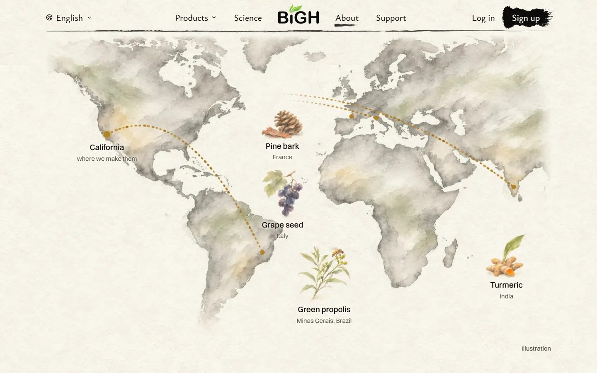<figcaption>Laptop, the trails being laid</figcaption></figure>
        <figure>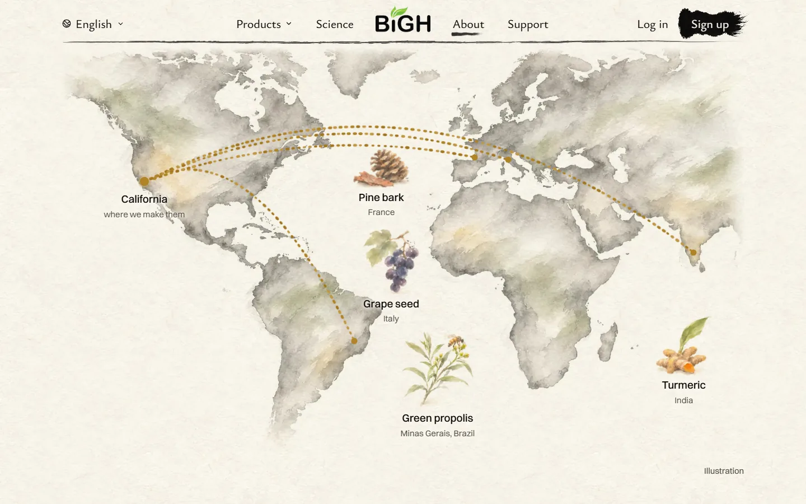<figcaption>Laptop, settled</figcaption></figure>
      </div>
      <figure class="phone">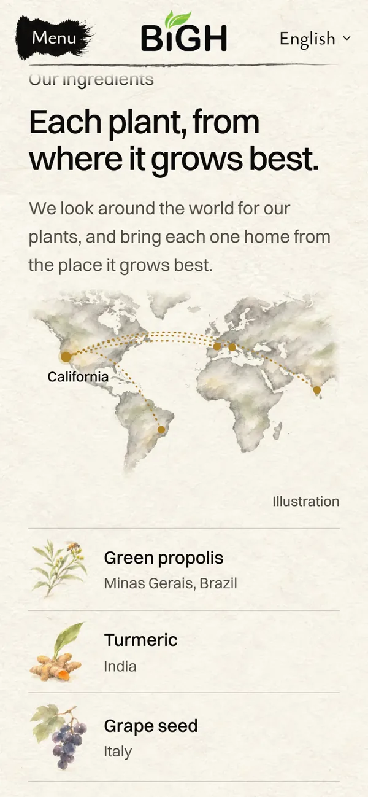<figcaption>Phone</figcaption></figure>
    </div>
  </section>

  <h2 class="section-title">Next: Made in California</h2>
  <p class="note">The words are the same in all three: GMP (Good Manufacturing Practice) in plain words, and its three rules. "Made in California" also stays in the promises list, as you asked; I'll put it back when I build the one you pick.</p>

  <section class="card" aria-labelledby="a">
    <h2 id="a"><span class="tag">A</span> The crate label</h2>
    <ul class="notes">
      <li>An old California fruit crate. Its painted label: an orange grove, the snowy Sierra, a gold sun.</li>
      <li>Our name, "Be in Good Health", in the label's banner.</li>
      <li>Like how California growers proudly named what they packed, 100 years ago.</li>
    </ul>
    <p class="score"><b>My score: 8/10.</b> Charming and clearly Californian. Holding it back: it reads more like a framed sign than a crate. The words beside it are a plain list. And oranges might make someone think we sell fruit.</p>
    <div class="shots">
      <figure>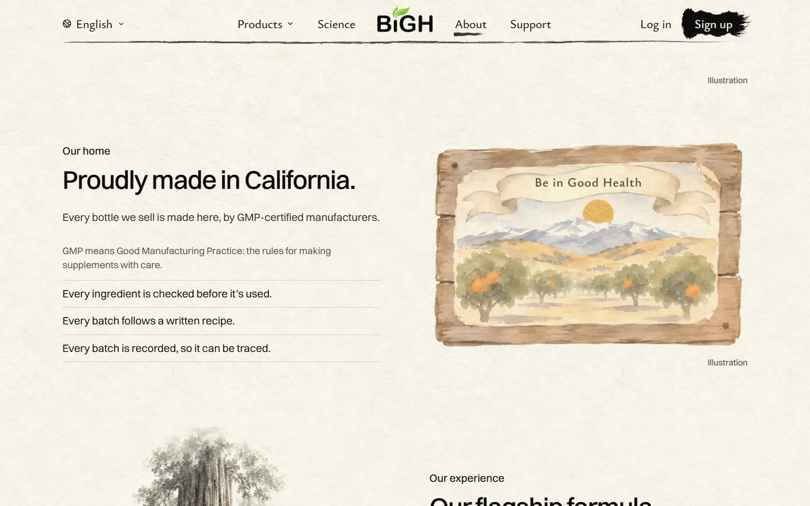<figcaption>Laptop</figcaption></figure>
      <figure class="phone">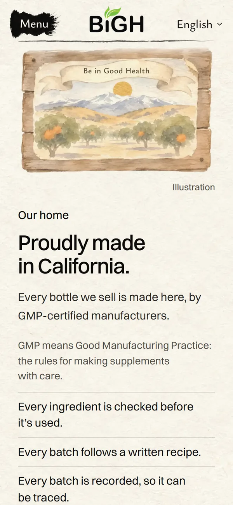<figcaption>Phone</figcaption></figure>
    </div>
  </section>

  <section class="card" aria-labelledby="b">
    <h2 id="b"><span class="tag">B</span> The record book <span class="badge">My pick</span></h2>
    <ul class="notes">
      <li>An open record book on a redwood table. A pressed California poppy. A gold ribbon.</li>
      <li>The words are written into the book, line by line, as you scroll to it.</li>
      <li>Why it fits: GMP really means writing everything down. The picture shows the promise.</li>
      <li>On a phone: just the right page, with the three rules on it.</li>
    </ul>
    <p class="score"><b>My score: 9/10.</b> The best signature moment of the three, and the picture carries real meaning. Holding it back: only the poppy says "California". The rest of the picture could be anywhere.</p>
    <div class="shots">
      <div class="stack">
        <figure>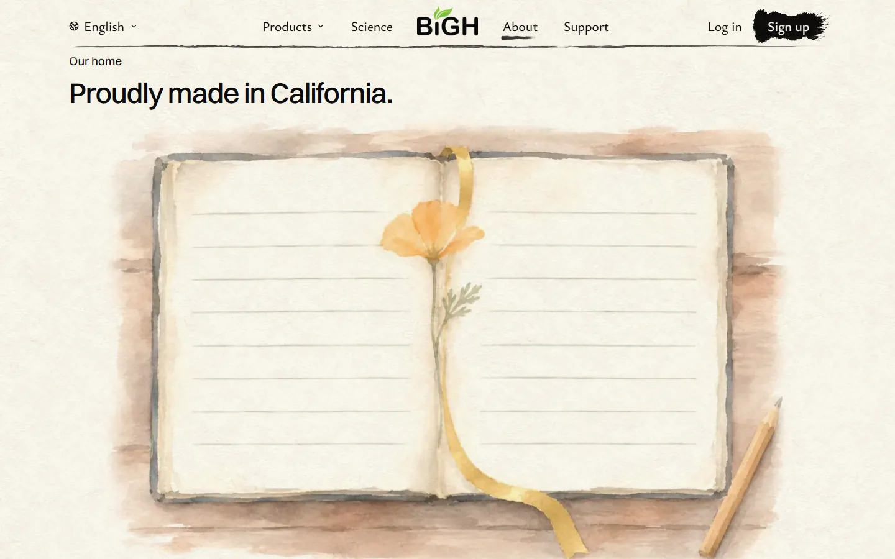<figcaption>Laptop, arriving: the book is empty</figcaption></figure>
        <figure>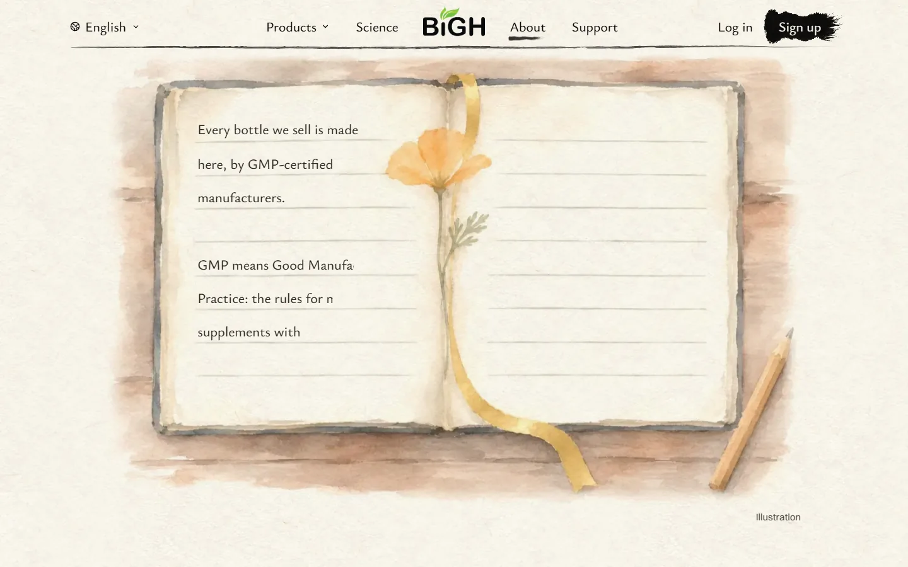<figcaption>Laptop, the words being written in</figcaption></figure>
        <figure>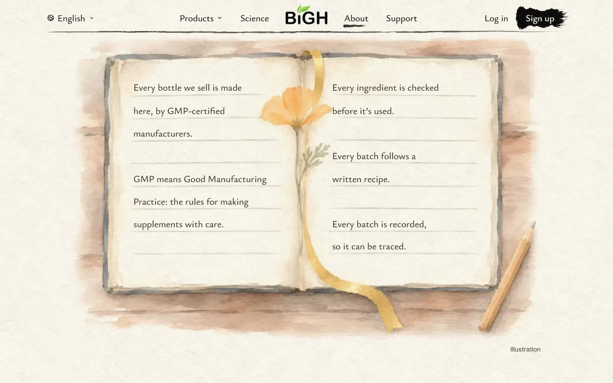<figcaption>Laptop, settled</figcaption></figure>
      </div>
      <figure class="phone">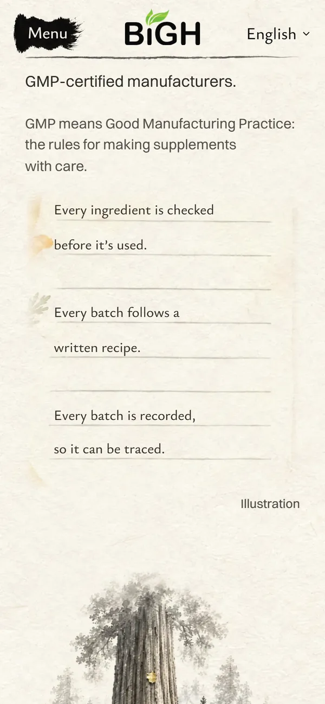<figcaption>Phone</figcaption></figure>
    </div>
  </section>

  <section class="card" aria-labelledby="c">
    <h2 id="c"><span class="tag">C</span> The Golden State</h2>
    <ul class="notes">
      <li>California painted alone, over its real outline: coast fog, the Sierra's snow, the desert.</li>
      <li>The Central Valley down the middle in gold leaf.</li>
      <li>It picks up where the map ends: the gold trails arrive, then we see California up close.</li>
    </ul>
    <p class="score"><b>My score: 8/10.</b> Bold, and clear at a glance. Holding it back: it's a second map right after the world map. The words beside it are a plain list.</p>
    <div class="shots">
      <figure>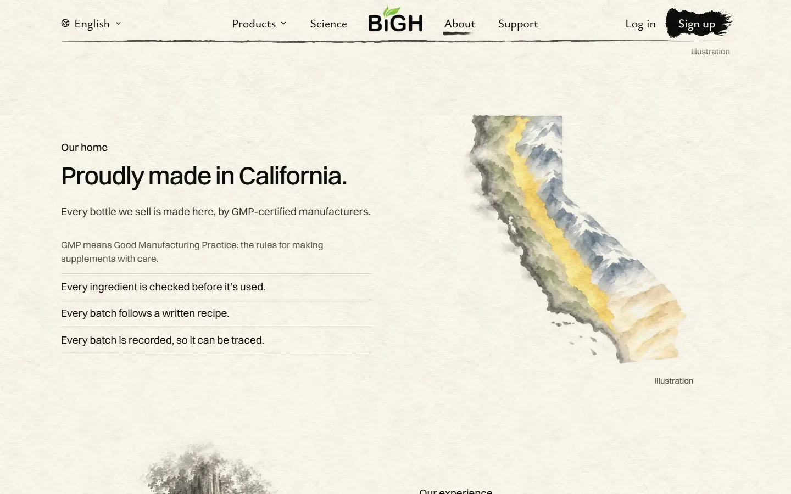<figcaption>Laptop</figcaption></figure>
      <figure class="phone">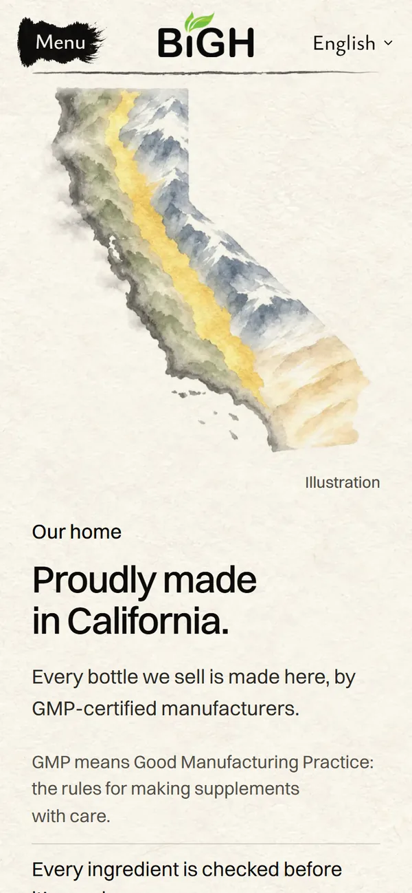<figcaption>Phone</figcaption></figure>
    </div>
  </section>

  <section class="ask" aria-labelledby="ask">
    <h2 id="ask">What I need from you</h2>
    <ol>
      <li>Pick A, B or C for Made in California (or tell me something else).</li>
      <li>Where do our turmeric, grape seed and pine bark come from? The map needs the real places before it can go live.</li>
    </ol>
  </section>

  <footer>Nothing here is live. All on the draft branch. Paintings are AI-made and marked "Illustration" on the page.</footer>
</main>
